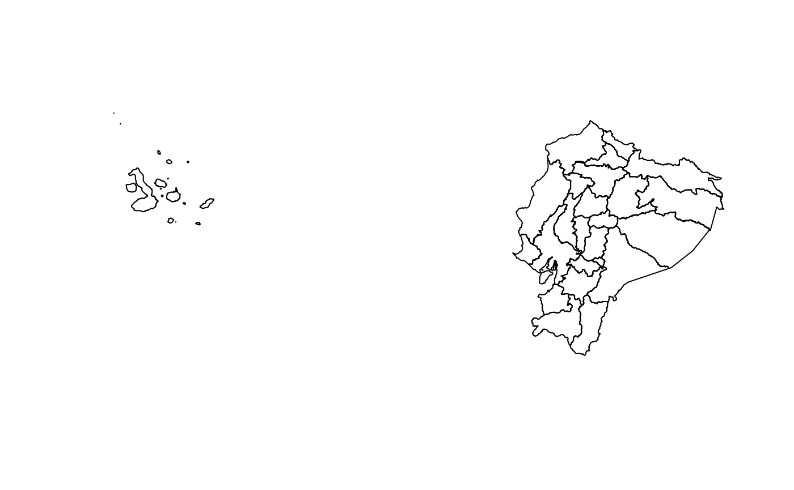

Devuelven un objeto sf con los límites del nivel solicitado y sus códigos
DPA, según la Organización Territorial del Estado (CONALI). Los tres niveles
encajan exactamente: cada cantón es la unión de sus parroquias y cada
provincia la unión de sus cantones.
Source
Organización Territorial del Estado, Comité Nacional de Límites Internos (CONALI), Ministerio de Gobierno del Ecuador. Datos abiertos, licencia CC BY: https://www.datosabiertos.gob.ec/dataset/organizacion-territorial-parroquial.
Arguments
- provincia
Provincias a incluir, por nombre (sin importar tildes ni mayúsculas) o código:
"Loja","11"o11.NULL(por defecto) devuelve todo el país.- resolucion
"baja"(por defecto; liviana, para mapas y tableros) o"alta"(detallada, para análisis espacial).- crs
Sistema de coordenadas de salida. Por defecto WGS84 (EPSG:4326). Usa
32717(UTM 17S) para calcular áreas o distancias en metros.- canton
Cantones a incluir, por nombre o código. Si un nombre se repite en varias provincias (por ejemplo, Bolívar u Olmedo), usa el código o indica también
provincia.- tipo
Solo para parroquias:
"cabecera"(cabeceras cantonales),"rural"(parroquias rurales),"zona"(zonas en estudio) oNULL(todas). Se pueden combinar, por ejemploc("cabecera", "rural").- area
Obsoleto. Usa
tipo."rural"equivale atipo = "rural"y"urbana"atipo = "cabecera".
Value
Un objeto sf de polígonos con las columnas:
read_provincias():dpa_provin,provincia,tipo,area_km2.read_cantones():dpa_canton,canton,tipo,dpa_provin,provincia,area_km2.read_parroquias():dpa_parroq,parroquia,tipo,dpa_canton,canton,dpa_provin,provincia,area_km2.
tipo vale "provincia", "cantón", "cabecera cantonal" o
"parroquia rural" según el nivel, o "zona en estudio".
Details
Además de las circunscripciones, las capas incluyen las zonas en estudio
(territorios con límites aún no resueltos), identificadas en la columna
tipo, para que el mapa nacional no tenga huecos. Para excluirlas, filtra
tipo != "zona en estudio". Las parroquias son las de la división
político-administrativa: cabeceras cantonales y parroquias rurales. Las
parroquias urbanas forman parte de su cabecera cantonal.
La primera vez se descarga el GeoPackage de la resolución pedida y se guarda en caché; las siguientes veces se lee directamente del disco.
Examples
provincias <- read_provincias()
plot(sf::st_geometry(provincias))

# Cantones de una provincia, en UTM 17S
loja <- read_cantones(provincia = "Loja", crs = 32717)
# Parroquias rurales de un cantón
read_parroquias(canton = "Puyango", tipo = "rural")
#> Simple feature collection with 5 features and 8 fields
#> Geometry type: MULTIPOLYGON
#> Dimension: XY
#> Bounding box: xmin: -80.29568 ymin: -4.0664 xmax: -79.87598 ymax: -3.85613
#> Geodetic CRS: WGS 84
#> dpa_parroq parroquia tipo dpa_canton canton dpa_provin provincia
#> 1 111051 CIANO parroquia rural 1110 PUYANGO 11 LOJA
#> 2 111052 EL ARENAL parroquia rural 1110 PUYANGO 11 LOJA
#> 3 111053 EL LIMO parroquia rural 1110 PUYANGO 11 LOJA
#> 4 111054 MERCADILLO parroquia rural 1110 PUYANGO 11 LOJA
#> 5 111055 VICENTINO parroquia rural 1110 PUYANGO 11 LOJA
#> area_km2 geometry
#> 1 79.936 MULTIPOLYGON (((-80.03762 -...
#> 2 27.715 MULTIPOLYGON (((-79.98415 -...
#> 3 203.758 MULTIPOLYGON (((-80.16189 -...
#> 4 28.082 MULTIPOLYGON (((-79.88239 -...
#> 5 56.300 MULTIPOLYGON (((-79.91506 -...